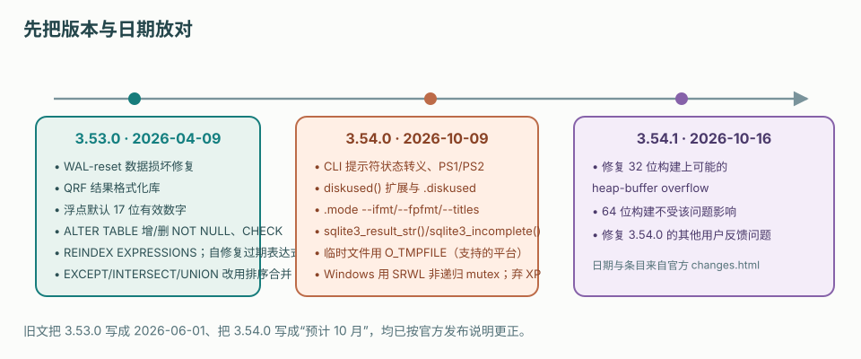
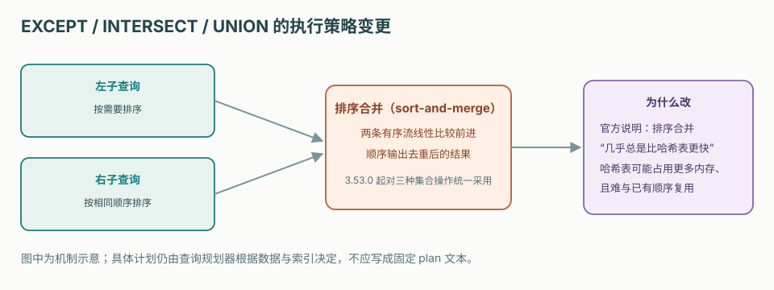

2026 新特性：3.53.0 与 3.54.0 的真实变更
先把 2026 年三个发布的日期放对，再逐条核对 3.53.0/3.54.0 的真实变更：QRF、17 位浮点、复合查询改排序合并、CLI 与 Windows 平台调整。
1. 先把版本与日期放对
解读“新特性”最容易出错的地方不是代码，而是版本与时间线。官方发布说明写得很清楚：3.53.0 是 2026-04-09，3.54.0 是 2026-10-09，紧随其后的 3.54.1 是 2026-10-16。旧版页面把这些日期写成了“6 月 1 日发布”与“预计 10 月”，从第一句就错了。

src/whence.c、虚构的 whereLoopAddBtree() 伪代码、虚构的 ext/misc/qrf.c 与 qrf_md() 函数，以及一张虚构的“各文件变更行数”表。这些已删除；本章只保留官方发布说明能逐条核对的变更。2. 3.53.0：修复、语言与 API
3.53.0 既是修复版本，也是语言/API 版本。官方条目包括：
| 类别 | 变更 |
|---|---|
| 修复 | 修复 WAL-reset 数据库损坏 bug |
| 输出 | 新增 QRF（Query Result Formatter）库，用于 CLI 结果格式化；Tabular 模式下数值默认右对齐 |
| 浮点 | 文本↔浮点转换重写；默认舍入到 17 位有效数字（旧版为 15），可用 SQLITE_DBCONFIG_FP_DIGITS 调整 |
| DDL | ALTER TABLE 支持增/删 NOT NULL 与 CHECK 约束 |
| 索引 | 新增 REINDEX EXPRESSIONS；新增自修复索引以处理过期表达式索引问题 |
| 函数 | 新增 json_array_insert() / jsonb_array_insert() |
| C API | sqlite3_str_truncate()、sqlite3_str_free()、sqlite3_carray_bind_v2()、SQLITE_PREPARE_FROM_DDL、SQLITE_UTF8_ZT、SQLITE_LIMIT_PARSER_DEPTH |
关于“自修复索引”，准确的来源是我们第 22 章讲过的官方文档：它针对的是过期表达式索引（确定性函数在不同平台/版本上结果漂移），而不是“统计信息不准”。兩者不能混为一谈。
3. 3.53.0 查询规划器改进
官方在 3.53.0 列出了一组规划器改动，其中最容易解释的是集合操作：对 EXCEPT、INTERSECT、UNION 统一改用 sort-and-merge 算法，而不是哈希表，因为前者“几乎总是更快”。

- 大型多路 JOIN 在星型 schema 上的连接顺序选择得到改进；
EXISTS-to-JOIN优化放宽：插入的 JOIN 项不再必须位于最内层循环；omit-noop-join优化可以略去一整条不影响输出的 JOIN 链；- 当
GROUP BY e1 ORDER BY e2中的 e1/e2 仅 ASC/DESC 不同时，可用单个索引优化； - 在某些结果集与 ORDER BY 不完全匹配时，允许虚拟表优化
DISTINCT。
注意：这些都是规划器策略的改进，而不是稳定的 EXPLAIN 输出变化；不要把某串计划文本当成必须在某版本出现的结果。
4. 3.54.0：CLI 与平台调整
3.54.0 的重点在 CLI 与平台，而不是大的用户可见特性：
| 类别 | 变更 |
|---|---|
| CLI 提示符 | 提示符字符串可含转义序列显示状态；初始提示符可用 SQLITE_PS1/SQLITE_PS2 初始化；尊重 NO_COLOR |
| .mode | 新增 --rowcount on、--titles always（已成为默认）、--ifmt/--fpfmt 控制整数/浮点渲染 |
| 磁盘使用 | 新增 diskused() 扩展与 .diskused 点命令，取代已弃用的 sqlite3_analyzer |
| C API | 新增 sqlite3_result_str() 与 sqlite3_incomplete()；sqlite3_limit() 新增 SQLITE_LIMIT_SCHEMA、SQLITE_LIMIT_TRIGGER_STEPS |
| 平台（仅 Windows） | 非递归 mutex 改用 SRWL；弃用 Windows XP 及更早版本（需 Vista 或更新） |
| 平台（支持时） | 生成临时文件时使用 Linux 的 O_TMPFILE |
3.54.0 还有一些规划器小改进（例如：对带表达式索引的表做 UPDATE 时，若被索引值未变则不改动索引；优化 expr OR TRUE/expr OR FALSE；忽略 IN 右侧的 DISTINCT；UNION ... LIMIT 1 更快）以及“对 DEFAULT 子句中的 SQL 函数调用 authorizer”的行为变化。
3.54.1（2026-10-16） 修复了 32 位构建上可能的 heap-buffer overflow（64 位不受影响）以及 3.54.0 的其他用户反馈问题。
5. 可运行实验
examples/27_features.py 在本机 SQLite 上验证几个 3.53+ 可观察的行为：REINDEX EXPRESSIONS 可执行、对带表达式索引的表更新未变值后索引仍然一致、以及 UNION ... LIMIT 1 返回正确结果。版本低于 3.53.0 时脚本会输出 SKIPPED 而非谎报通过。
python3 examples/27_features.py
# PASS: REINDEX EXPRESSIONS, expression-index consistency and UNION LIMIT ok; sqlite3 3.54.0本实验不验证 CLI 提示符、diskused()、Windows 平台行为或性能提升——那些需要特定平台与真实 benchmark，本章不做断言。
可重复练习
- 对照官方 changes.html，找出你所用版本引入但本页未列的条目；
- 用
SELECT sqlite_version()与sqlite_source_id()记录环境，再重现任一实验； - 解释为何“40 个 commit / 变更行数”这类数字不能从两个版本号稳定推出。
自测：为何不能把“自修复索引”当成“统计信息修复”？
因为官方定义的是针对过期表达式索引：确定性函数在不同平台/版本下结果漂移一两 ULP，导致索引值与重算值不一致。它与“统计信息不准”是不同问题。
原始资料与版本边界
本章所有条目与日期均来自 SQLite 官方发布历史；不同版本的具体实现、导出符号与性能数字会持续变化，应以官方 changelog 与源码为准。
- SQLite Release History · SQLite 官方
- 3.53.0 发布说明 · SQLite 官方
- Stale Expression Indexes（自修复） · SQLite 官方
- opfs-wl VFS · SQLite 官方